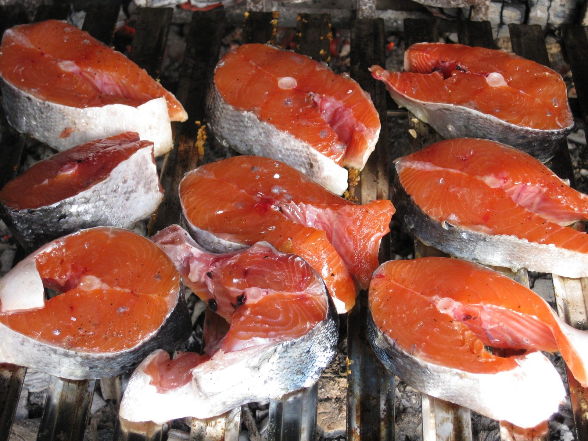
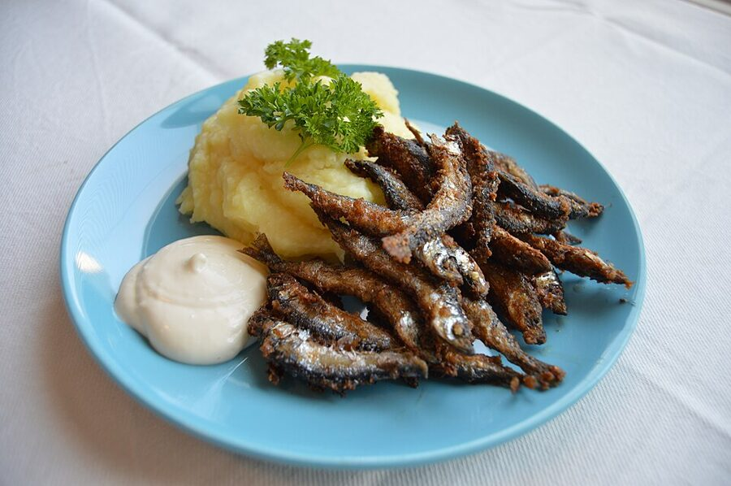

Techniki połowu
Spinning, feeder, spławik, metoda, muchowa i więcej — jak łowić każdą z metod krok po kroku.
Poznaj technikiPoradnik • Atlas ryb • Społeczność
FishPoint to wędkarski przewodnik: opisy i dobór sprzętu, atlas ryb, charakterystyka łowisk i praktyczne poradniki — od pierwszej wędki po zaawansowane techniki. Praktyczna wiedza znad wody, zebrana w jednym miejscu.
Od wyboru pierwszej wędki, przez atlas ryb, po sprawdzone techniki znad wody — krok po kroku, bez przepłacania i bez ściemy.
Zacznij tutajStart
Osobna ścieżka dla początkujących: najpierw kategoria Sprzęt, a w niej konkretne podkategorie z przykładami zastosowań na ryby i metody.
Jedna podstrona startowa, a w niej dalszy podział na wędki, kołowrotki, żyłki i plecionki, przynęty oraz akcesoria z długimi opisami.
🐟Osobny dział dla początkujących: karp, szczupak, okoń, leszcz i praktyczne wskazówki, jak rozumieć ich zwyczaje.
🌊Podział łowisk na jeziora, rzeki, stawy i kanały. Każda podstrona wyjaśnia, jak zacząć i na co zwrócić uwagę.
📄Karta wędkarska, egzamin, składki PZW, zezwolenia na wody, łowiska komercyjne i kontrole — wszystko, co musisz załatwić, zanim zarzucisz wędkę.
📏Wymiary i okresy ochronne najważniejszych gatunków, limity dobowe oraz zasady postępowania z rybą niewymiarową.
🌅Krok po kroku: co spakować, gdzie i kiedy iść, jak zmontować prosty zestaw i co zrobić ze złowioną rybą.
🎣Co kupić, a czego nie: wędka, kołowrotek, żyłka, przynęty i akcesoria — sensownie i bez przepłacania.
🪱Jak nabić robaka, kukurydzę i sztuczne przynęty oraz jak bezpiecznie odhaczyć i wypuścić rybę.
⚖️Przepisy i dokumenty w jednym miejscu: ustawa, rozporządzenia, regulamin PZW, karta wędkarska i zezwolenia — z oficjalnymi linkami i ściągami PDF do pobrania.
Sprzęt
Podstrony opisują realne parametry i zastosowania sprzętu: bez obietnic „cudownych brań”, za to z jasnym wyjaśnieniem, do czego służy dany element zestawu.
Spinning, feeder, karpiówki, match i bolonka: długość, ciężar wyrzutowy, akcja oraz dobór do metody.
⚙️Rozmiar, przełożenie, hamulec, nawój linki i wolny bieg — praktyczne znaczenie parametrów.
🧵Kiedy wybrać żyłkę, kiedy plecionkę, po co fluorocarbon i kiedy potrzebny jest przypon stalowy.
🪱Gumy, woblery, błystki, zanęty i pellety opisane przez głębokość pracy, prowadzenie i warunki.
🧰Haczyki, agrafki, krętliki, pudełka, podbieraki i mata — drobiazgi wpływające na skuteczność.
🥾Warstwy ubioru, wodery, spodniobuty, okulary polaryzacyjne i kamizelka asekuracyjna.
Metody
Od spinningu po wędkarstwo podlodowe — każda technika opisana od zestawu przez taktykę po przepisy.
Jigowanie, twitching, jerkowanie i dobór przynęt do pory roku — aktywne łowienie drapieżników.
🧺Koszyki zanętowe, method feeder i taktyka gruntowa na rzece oraz jeziorze.
🟠Bat, bolonka, match i tyczka — klasyka prezentacji przynęty pod spławikiem.
🏕️Zasiadka, zestawy włosowe, kulki proteinowe, sygnalizatory i zasady C&R.
🪶Sucha mucha, nimfa i streamer — sztuka rzutu i łowienia pstrąga oraz lipienia.
🚤Łowienie z płynącej łodzi: sprzęt, kontrola głębokości i status prawny w Polsce.
🧊Mormyszki, błystki podlodowe i przede wszystkim bezpieczeństwo na lodzie.
⚓Bałtyk z brzegu i kutra: śledź, belona, stornia oraz surfcasting.
📚Pełny przegląd metod łowienia z poradami, jak wybrać pierwszą technikę dla siebie.
Atlas
18 gatunków opisanych od rozpoznawania i biologii po metody łowienia, wymiary ochronne i wartość kulinarną.
 🦈
🦈Szczupak, sandacz, okoń, sum, boleń i węgorz — taktyka, przynęty i sezonowość żerowania.
 🐟
🐟Karp, lin, leszcz, płoć, karaś, jaź, kleń i amur — nęcenie, zestawy i pory brań.
 🗂️
🗂️Pełna lista gatunków razem z łososiowatymi: pstrąg, lipień, miętus oraz troć i łosoś.
Polecane
Spinning, feeder, spławik, metoda, muchowa i więcej — jak łowić każdą z metod krok po kroku.
Poznaj technikiGatunki polskich wód: zwyczaje, żerowanie, dobór metody i przynęty oraz wymiary i okresy ochronne.
Otwórz atlasPraktyczna wiedza znad wody: zanęty, pogoda a brania, węzły, łowienie nocą i zimą, etyka i przepisy.
Czytaj poradnikiBaza wiedzy
Miesiąc po miesiącu: co, gdzie i na co bierze przez cały rok.
🪢Clinch, palomar, grinner i FG — krok po kroku z zastosowaniami.
🌦️Ciśnienie, fronty, wiatr i temperatura wody — fakty kontra anegdoty.
🥣Receptury na leszcza, płoć, lina i karpia z dostępnych składników.
🤲Hol, mata, odhaczanie i reanimacja — jak wypuszczać ryby z głową.
📡2D, DownScan, SideScan i mapy batymetryczne — elektronika bez tajemnic.
🌙Sum, węgorz i sandacz po zmroku — bezpieczeństwo i taktyka.
❄️Spowolniony spinning i grunt, gdy woda ma kilka stopni.
📖Pełna baza wiedzy: łódka, etyka i przepisy, kalendarze i więcej.
Nowość
Kalkulatory i pomocniki, do których się wraca: sprawdź wymiar i okres ochronny ryby, zaplanuj sezon, dobierz sprzęt albo rozpoznaj złowiony gatunek — wszystko w kilka sekund, bez logowania.
Filtrowana tabela wymiarów, okresów ochronnych i limitów. Szukaj gatunku i sortuj kolumny.
📅Heatmapa aktywności 10 gatunków przez cały rok. Wybierz miesiąc i zobacz ranking brań.
🎣Trzy pytania i masz gotowy zestaw: wędka, kołowrotek, linka, przynęty i akcesoria.
🐟Zaznacz cechy złowionej ryby, a klucz wskaże pasujące gatunki z atlasu.
📖Przeszukaj wszystkie poradniki, gatunki, techniki i przepisy w jednym polu.
🗂️Pełny przegląd interaktywnych pomocników FishPoint w jednym miejscu.
Po połowie
Od patroszenia i filetowania po wędzarnię i grill — co zrobić z rybą, którą zdecydujesz się zabrać.

Podstawy

Wędzenie

Przepisy
Aktualności

Spinning

Feeder

Sprzęt

Sezon

Relacja

Blog
Łowiska
Interaktywna mapa znanych polskich łowisk. Kliknij znacznik, aby zobaczyć krótki opis, główne gatunki i link do szczegółów.
Pełne bazy łowisk z regulaminami i opiniami znajdziesz w serwisach:
Kontakt
Możemy rozbudować projekt o sklep, panel blogowy, katalog łowisk, rezerwacje przewodnika albo społeczność wędkarzy.